Equi-Table
Zurich, Switzerland
Introduction
I’ve been in Europe for around two and a half weeks but barely had the chance to dictate my own food choices. The first week was spent at a conference that provided all of the meals (cafeteria-style but still pretty good), and the last week was spent on a deadline, so I just ate the food I packed for the trip. I went to Whole Foods before I left and got many varieties of cup noodles, fully cooked curries, and rice. These are actually pretty good in flavor and kept well in the suitcase!
So I finally got the chance to explore the culinary scene around Zurich. I don’t think Switzerland is really a place for foodies — their signature dish, raclette, relies on a very high quality cheese and does not go above and beyond that to incorporate extra flavor. Regardless, I was determined to make the most of my time in Zurich, so I went to Equi-Table.
The first great part about this experience was that I was walking around about 10 minutes away from the restaurant and had a sudden urge to go eat there. I called and got a reservation within 30 minutes (i.e., at opening time), and they were able to adjust the fixed menu to account for a gluten allergy! Most places need a 24-48 hour notice to do that (understandably), so I felt very lucky that they could make it work. I had no stomach issues after this meal, which was great!
The Environment
The area around the restaurant is not as tourist-oriented as the other parts of Zurich that I had seen, so it was nice to get a calmer vibe. The restaurant had all the trappings of fine-dining (e.g., coat check), but it was in a small, somewhat old building. It would have been charming but it did feel a bit out of sync with the modern menu.
The waitstaff was great and remembered my allergy throughout the meal to make it easy on me. Their English was pretty good, though we did whip out Google Translate a few times to decipher uncommon fruits and vegetables.
The restaurant theme is a modern and sustainable take on local Swiss ingredients. I only later realized was that this meant no seafood! I also had some impression that the Alps would grow the greatest produce in the world, but I’m not sure why I would even think that.1

Food
As usual, the meal started with a bunch of tiny bites that did not count as a course. I ate the broccoli with tweezers, which felt very fancy. The flavor wasn’t very balanced, because it’s hard to make miso compete with charred broccoli, but it was still a nice texture to eat. The bread was just as amazing as it looks: the exterior leaned towards a thicker rustic crust though the inside was fluffy. It came with a whipped butter that made the whole situation taste like cornbread with brown butter. But the best bite, by far, was the polenta chip with the amazing chive yogurt. It looks like a lot of dip for a small number of thin chips, but I finished the dip and found the flavor to go well with the deep-fried chips.
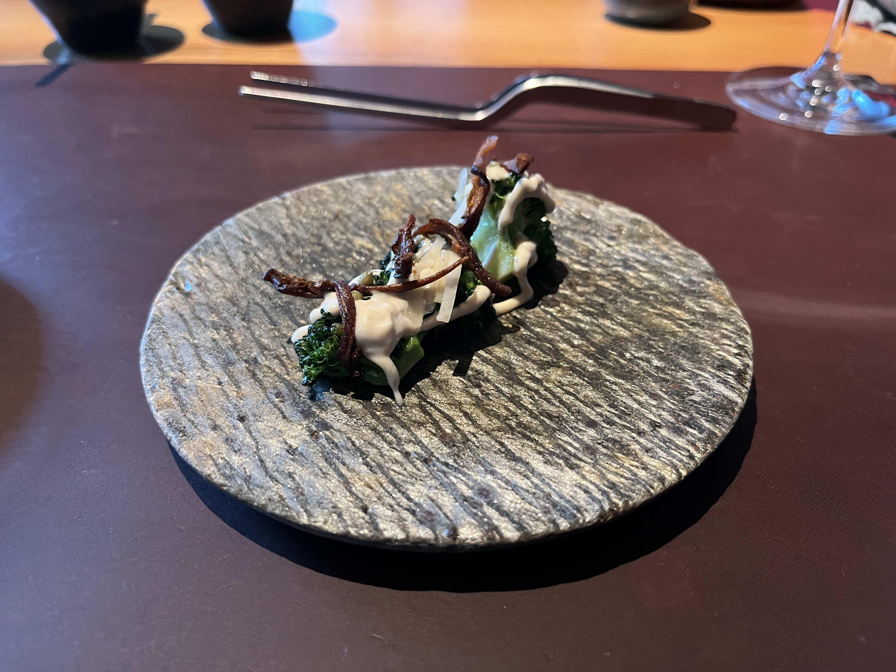
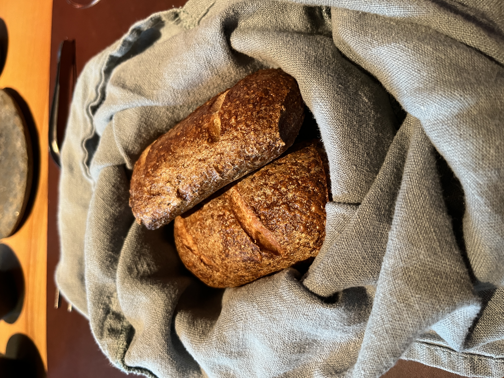
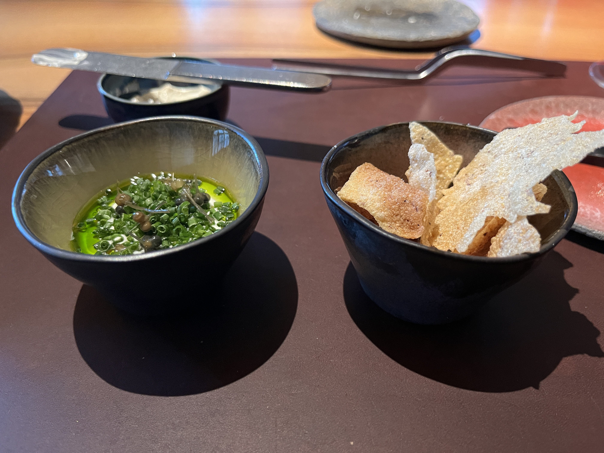
From there, we moved on to yet another bite situation. This bite felt so European because it was pork wrapped around some cabbage and topped with mustard powder. The flavor was nice, but the pork could have been crispier somehow.
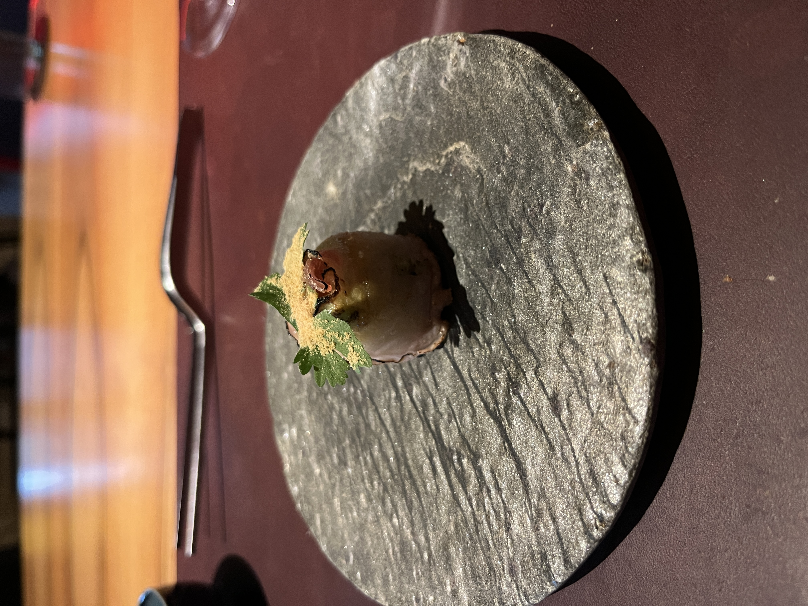
Finally, the first course! It was so weird! The dish was tomatoes in many different forms (tomato ice, pickled tomatoes, tomatillos, etc). I think once you have something hearty and warm like the pork bite, it’s hard to go back to something cold and sharp like this. The waiter poured some basil oil over the dish but the basil kept separating from the oil, so he had to keep mixing it intermittently. Once that oil went in, I immediately panicked because it meant my tomato ice would become tomato water very soon! I tried to eat it really quickly, which only highlighted the ill-designed shape of the bowl. Eventually I picked up the bowl and tilted it to get everything out.
At this point I started to worry I would eat 6 courses and go home hungry. Luckily the second course was more substantial. The dish was sweetbread with artichokes, parsley foam, and parsley oil. I think the problem with putting foam and oil in one dish is that the oil pools beneath the foam and becomes a little gross. But I liked the overall flavors a lot!
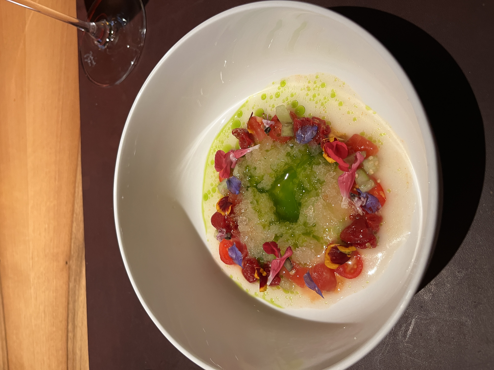
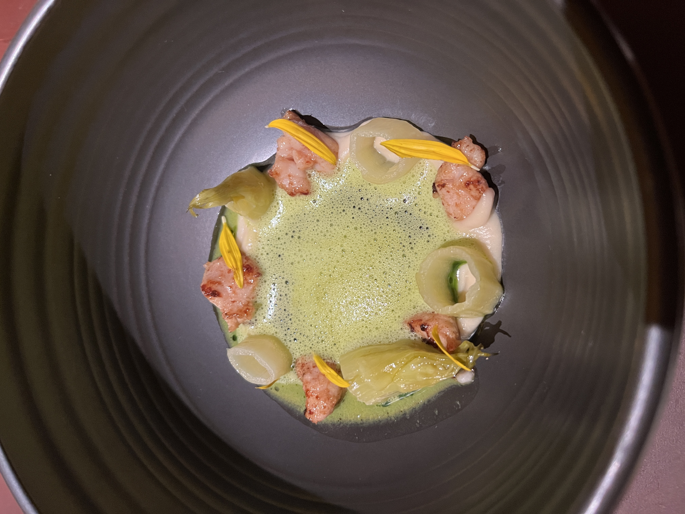
Now things started to get a bit more substantial. The third course was a mushroom cream with sage and trout roe. The first thing I liked was the incredible amount of sage and sage butter. These were the main flavor generators so it was nice to have them amid a sea of creamy umami. At least after I finished this bowl I felt like I had eaten the equivalent of an appetizer!
The fourth course became even better. It was a truffle risotto! I was so excited to get some familiar, real flavors back into the meal. It was a nice portion, large enough that the earthy truffle was a star but small enough that I didn’t get the typical late-stage risotto regret. It turns out that the Alps actually do boast some truffles. You can see in the picture that they put a lot on top (and that kind of scared me) but the waiter assured me that the Swiss truffles are not as expressive as the Italian ones.
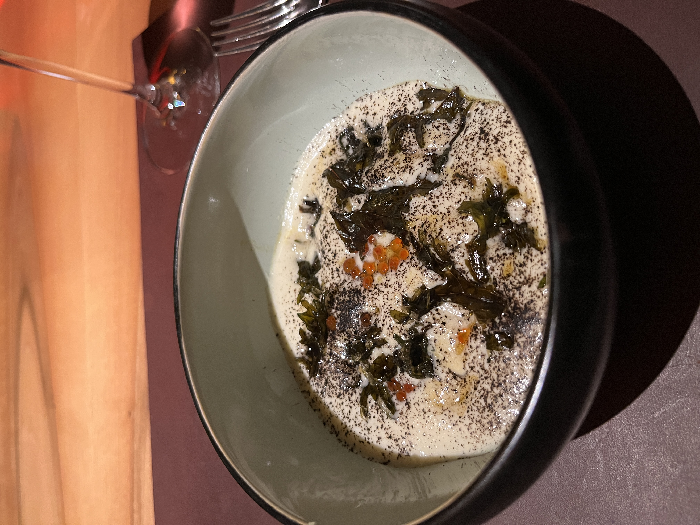
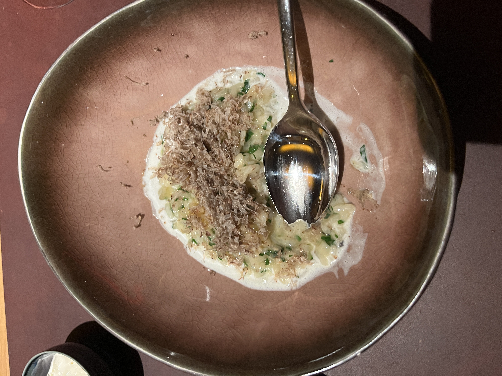
At this point I am totally primed for the main dish. And it was pretty worth the wait! It was a venison with a smoked, somehow softened carrot and some harder carrot slices. The waiter poured the jus on the plate for me. Overall the dish was great, and I of course loved the pairing of something smoky with red meat. But I don’t have much more to say about it than that.
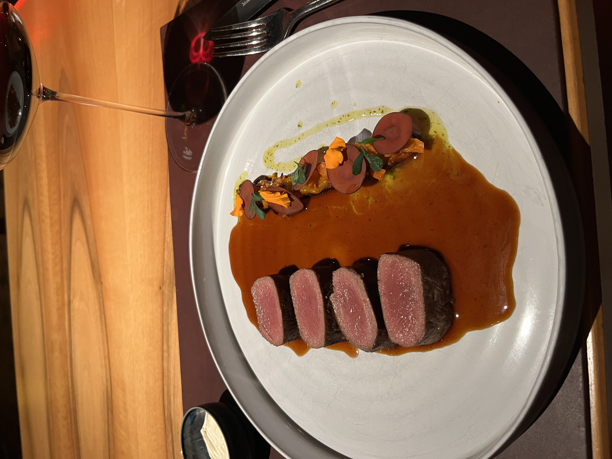
Now came the desserts, of which there were many. Surprisingly, I liked the first one: grapes with grape ice. It was very refreshing after the entire meal. The yogurt dessert was totally carried by the lemon-flavored shard of something that they put on top. It was definitely not carried by what I consider to be the blandest blueberries to ever exist. The beet candy and jelly were a neat idea but entirely forgettable. The dark chocolate was, as expected, extremely rich and heavenly. What I learned is that dark chocolate does not need to be bitter: it can carry the earthy taste without bitterness if it is treated correctly. There was one more dessert that was like a cheesecake topped with blueberries, but at this point I was tired of desserts (and giant, flavorless blueberries).
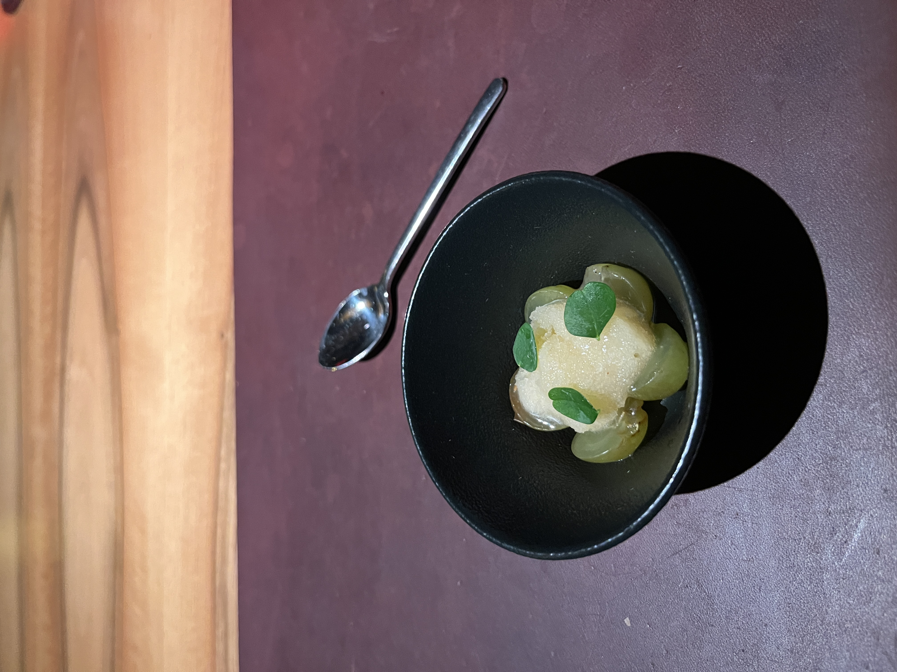
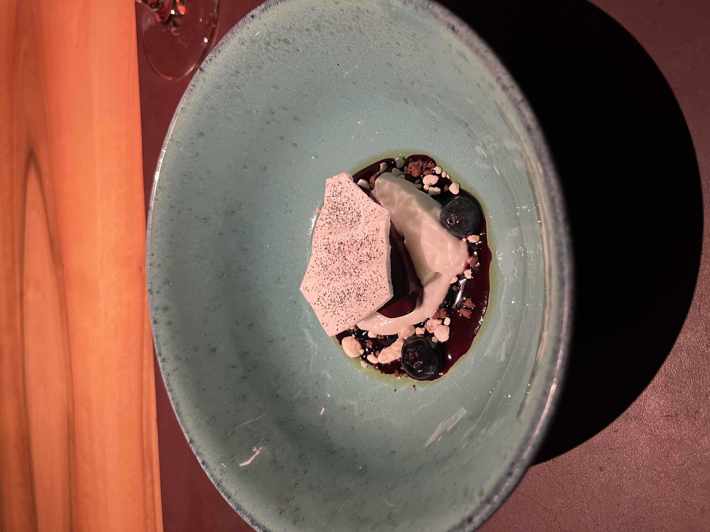
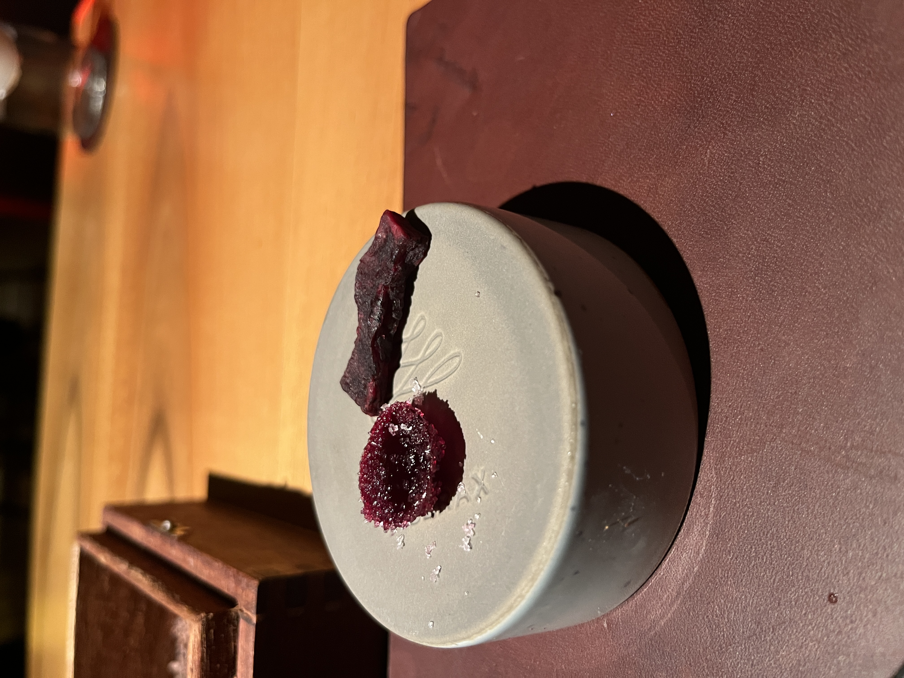
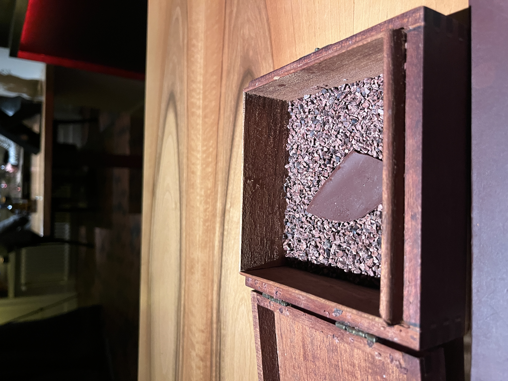
Conclusion
I don’t think it compares to American fine-dining. There were some highlights and some lowlights, but overall the first few courses read like a restaurant trying too hard and failing to put something meaningful on the plate. The more substantial dishes were good but not unique – I could have gotten them at a mid-tier Italian restaurant. I do think part of the problem is that I didn’t understand a lot of what they were saying was on the plate, and at a certain point, I just treated it like a fun mystery. But maybe I would have liked it more if I had sought out the flavors they intended to present.
-
To be fair, the Alps does produce some of the greatest water in the world. All of the water in Switzerland is drinkable unless noted otherwise, and I’ve even filled up my water bottle from a stone decorative fountain! ↩